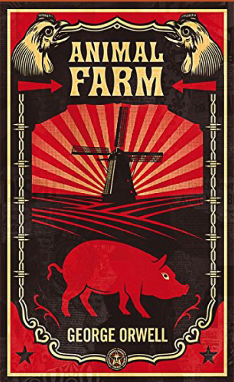
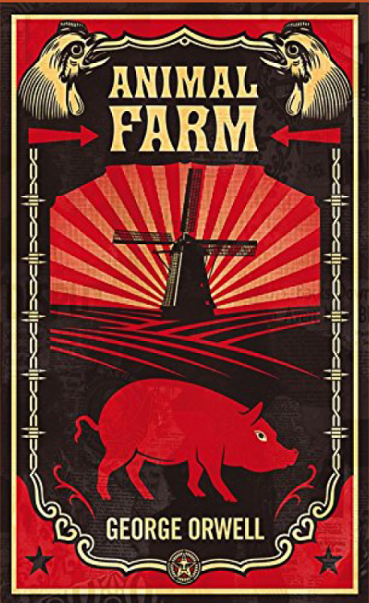

Short Biography
George Orwell, born Eric Arthur Blair on June 25, 1903, in Motihari, Bengal, India, was a renowned English novelist, essayist, and critic. He is best known for his novels Animal Farm (1945) and Nineteen Eighty-four (1949), the latter being a profound anti-utopian novel that explores the dangers of totalitarianism. Orwell's pen name, which eventually became his identity, was inspired by the River Orwell in East Anglia, and marked a turning point in his life, as he transitioned from being part of the British imperial establishment to becoming a literary and political rebel.
Early life
Orwell was born into the class of sahibs in colonial India, and in 1911, his family returned to England. He attended a preparatory boarding school on the Sussex coast, where his intellectual brilliance stood out despite his family's relative poverty. Orwell would later recall the hardships of this period in his autobiographical essay, Such, Such Were the Joys (1953). His academic excellence earned him scholarships to Wellington and then to Eton, where he studied from 1917 to 1921 under notable masters such as Aldous Huxley. It was at Eton that Orwell first began to publish his writing.
Service and Disillusionment
In 1922, instead of pursuing a university education, Orwell followed family tradition and joined the Indian Imperial Police in Burma. Though he initially appeared to be a model officer, his growing awareness of the oppressive nature of British colonial rule led to a sense of disillusionment and guilt. These experiences later informed his novel Burmese Days and his powerful essays, "Shooting an Elephant" and "A Hanging," which provided critical insights into the realities of imperialism.
Immersion in Poverty
Orwell returned to England in 1927 and resigned from the imperial police in 1928, marking the beginning of his journey as a writer. He immersed himself in the lives of Europe's poor and marginalized, living among laborers and beggars in London's East End and working as a dishwasher in the slums of Paris. This experience shaped his outlook on class struggles and societal injustices, themes that would later be echoed in his writing, particularly in Animal Farm.
Legacy and Influence
Animal Farm, an allegorical novella, reflects Orwell's disdain for totalitarianism and serves as a critique of the corrupting influence of power, drawing on his observations of the poor and his experiences with imperialism. Throughout his life, Orwell remained committed to exposing social and political injustices, leaving behind a legacy of literary works that continue to resonate today. He passed away on January 21, 1950, in London, England, but his voice endures through his thought-provoking writings.